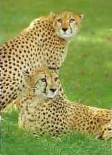
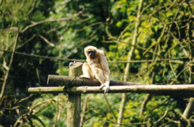
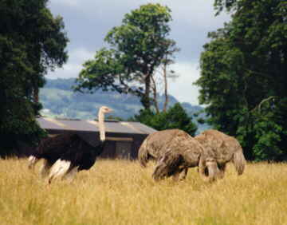

| Home | What To Do | University College Cork | Cork City Gaol | Cork City Hall | Fota Wildlife Park |
FOTA WILDLIFE PARK


Fota Wildlife Park, just 10 miles from Cork on the Cobh road, is among the most modern wildlife parks in Europe.
Established in 1983 with the primary aim of conservation Fota has more than 70 species of exotic wildlife in open natural surroundings with no obvious barriers. Giraffes, zebras, ostrich and antelope roam together in 40 acres of grassland, much as they would in the African savannah, monkeys swing through trees on lake islands, while kangaroos, macaws and lemurs have complete freedom of the Park. Only the cheetahs have a conventional fence.

A great many of the species at Fota are under serious threat in the wild. Only c. 10,000 cheetahs remain in their natural habitat and Fota Wildlife Park is the world's leading breeder of this endangered species.

Also being bred at Fota is the Scimitar horned Oryx brought to the brink of extinction but being re-introduced in its native North Africa; the Liontailed Macaque of which only c. 800 remain in a tiny patch of Indian forest; and many other species for which wildlife parks such as Fota are their only chance of survival.
The White tailed Sea Eagle became extinct in Ireland in the early 1900's but is now being re-introduced to the wild in Kerry. This magnificent bird of prey is held for breeding at Fota, where they can be seen by visitors.

Just beside the Wildlife Park is the internationally renowned Fota Arboretum, which has a beautiful collection of trees and shrubs, from all over the world, including China, Japan, Australia and the Himalayas.
There is no additional charge for entry to the Arboretum. Fota Wildlife Park is open daily April-September incl., and on weekends in October, from 10 am on weekdays and 11 am on Sundays. Last admissions are at 5 pm. Amenities include coffee shop, tour train, picnic benches and comprehensive information/identification panels on all major species.